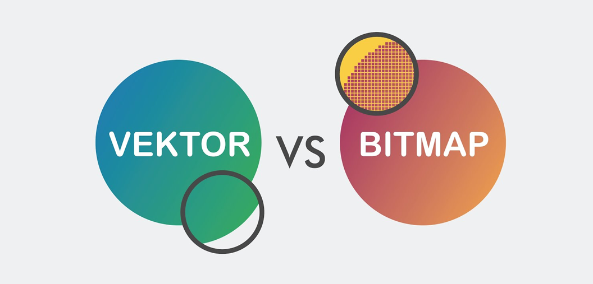
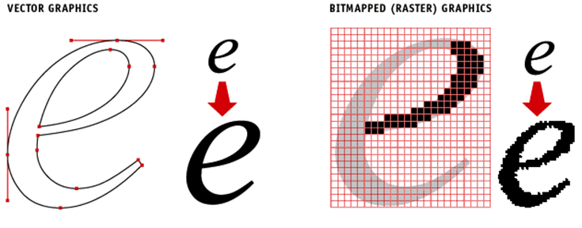
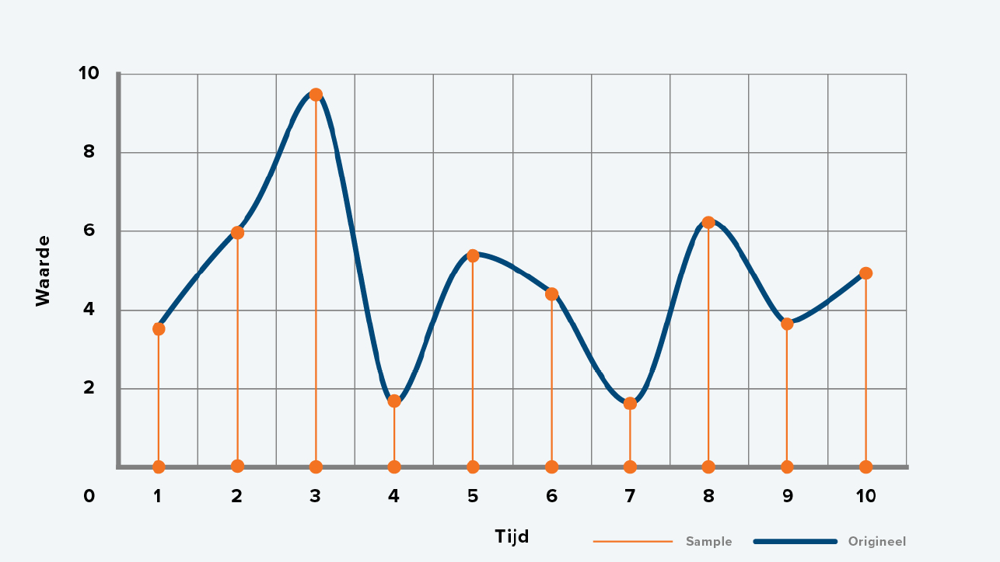
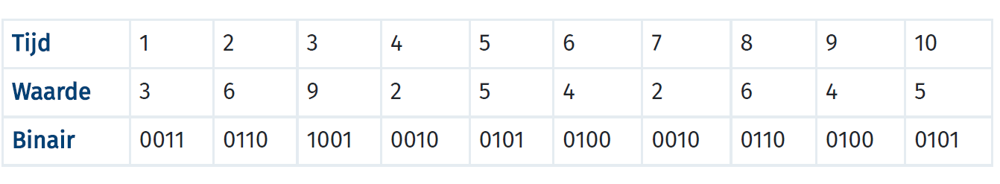

Bitmap en vectorafbeeldingen zijn heel erg belangrijk voor vooral plaatjes. Er zijn grote verschillen tussen ze in hoe goed je een plaatje ziet. Over deze twee ga ik je op deze pagina uitleggen. Ook ga ik vertellen over de opslag van geluid.
Een afbeelding die pixels heeft heet een vectorafbeelding. Vectorafbeeldingen hebben heel veel pixels. Hoe meer pixels hoe scherper het plaatje. Het enige probleem is dat hierdoor het mega veel opslagruimte in neemt en kan het heel veel MB kosten. Ook als je gaat inzoomen kan je zien dat het plaatje overduidelijk uit kleine pixels bestaat en is het plaatje niet echt mooi meer. Als je dus mooie plaatjes wil maken moet je met veel pixels alleen meer ruimte op de harde schijf, dus is het heel onhandig voor grote foto’s maar kan het wel voor kleine foto’s.
Je hebt ook een andere manier van opslaan die vectorafbeelding heet. Een vector afbeelding kijkt niet naar pixels maar naar de vorm waaruit de foto bestaan. Hierdoor kan je een veel duidelijkere afbeelding krijgen. Bij een bitmapafbeelding slaat hij alleen de kleur van de pixel op terwijl bij een vector afbeelding de vorm, de grootte, de kleur enzovoort. Doordat een vectorafbeelding veel meer opslaat wordt het een veel betere foto voor minder ruimte. Als je ook inzoomt op een vector afbeelding wordt hij niet onscherp.
Geluid kan je ook vastleggen in de computer maar dit gaat net wat anders dan andere dingen. Dit komt doordat geluid uit trillingen in de lucht bestaat. Trillingen in de lucht moeten dus uiteindelijk in nullen en enen opgeslagen worden. Als je een geluid opneemt wordt er een sample gemaakt waarmee een computer per seconde bijvoorbeeld meten hoe sterk het geluid is en dat wordt omgezet in een grafiek zoals hieronder. Al deze waarde kan je ook in een tabel zetten zoals onder de grafiek, daar is iedere sterkte van het geluid per seconde neer gezet en afgerond op hele getallen. Als je meer samples maakt wordt geluid steeds nauwkeuriger. De sample rate is hoe vaak er wordt gemeten per seconde. Bij de meeste muziek wordt vaak een sample rate van 44100 Hz. Omdat je dus 44100 keer per seconde wordt gemeten, krijg je de beste muziek.
 Hieronder heb ik weer uitlegfilmpjes gezet voor als je de uitleg op deze pagina niet begreep. Het eerste filmpje gaat over bitmap en vectorafbeeldingen en het tweede filmpje gaat over de opslag van geluidsfragmenten.